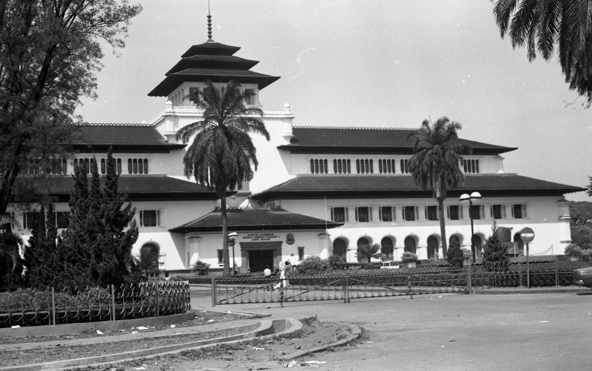

Rumah Adat
Rumah Adat
Welcome To Bandung
Explore
The World
Bandung, kota yang memukau dengan keindahan alam, budaya, dan hidangan lezat. Dikenal sebagai "Kota Kembang," Bandung menawarkan pegunungan hijau, kebun teh, tarian tradisional, makanan jalanan, dan kopi nikmat. Arsitektur art deco menambah pesona. Bandung adalah destinasi unik yang memukau.
Start Your Explore
History Of Bandung
Kota Bandung juga merupakan kota terbesar ketiga di Indonesia setelah Jakarta dan Surabaya. Bandung merupakan kota terpadat kedua di Indonesia setelah Jakarta dengan kepadatan mencapai 15.051 jiwa/km2.
Explore Bandung

Wisata
Of Bandung

Tangkuban Perahu
Lembang

Ranca Upas
Ciwidey

Snow Park Panama
Cijerah

Comment of
Gubernur Bandung
Gubernur Jawa Barat menegaskan, yang berpindah bukanlah ibu kota provinsi, melainkan pusat pemerintahan yang akan disatukan dengan pusat pertumbuhan ekonomi baru di kawasan Tegalluar, Kabupaten Bandung. Namun itupun baru pada tahap wacana. "Bukan pemindahan ibu kota, tapi wacana penyatuan pusat pemerintahan. Jadi jangan pakai sebutan ibu kota karena itu jelas berbeda," kata Ridwan Kamil di Gedung Sate, Kota Bandung, Sabtu (15/10/2022).
 Ridwan Kamil
Ridwan Kamil
Butuh Tour Guide ?
Masukkan Email kamu jika kamu membutuhkan pemandu untuk kota Bandung dimulai dari memperkenalkan Makanan, Tarian, Rumah Adat, Wisata yang terbaik, Sejarah Bandung
Klik Disini